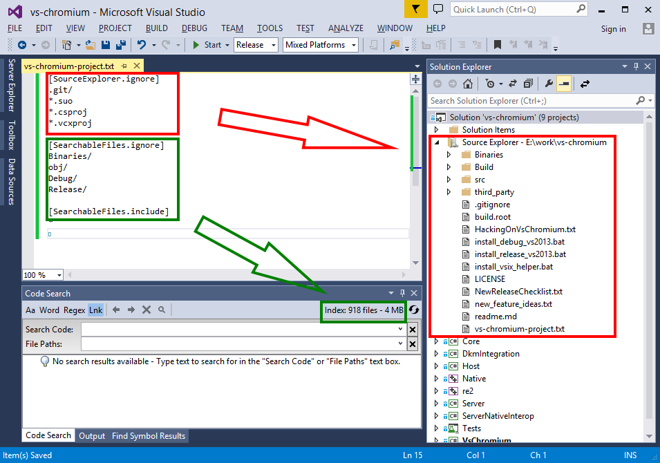
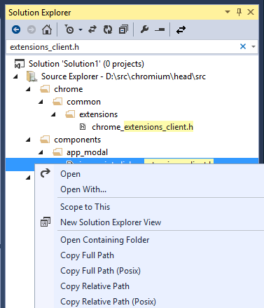
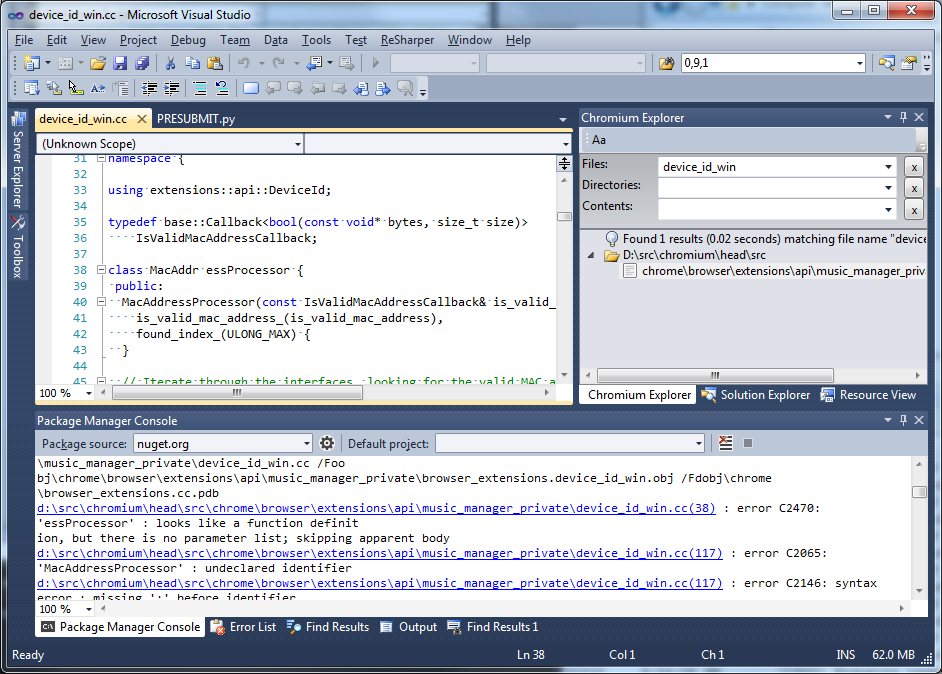
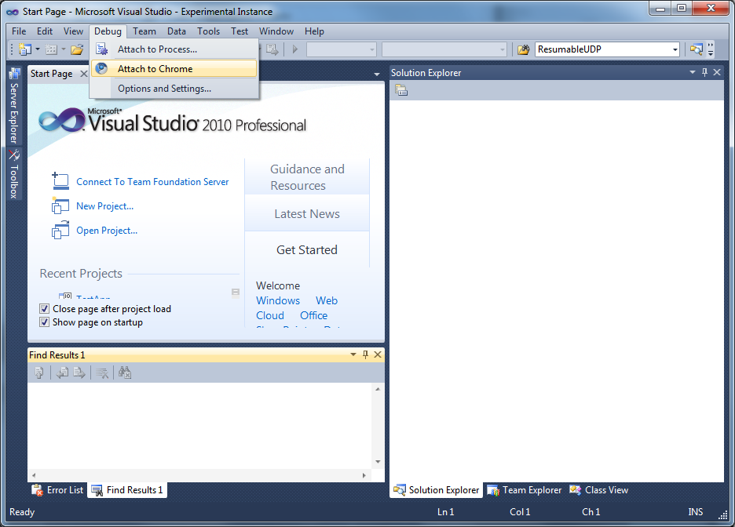
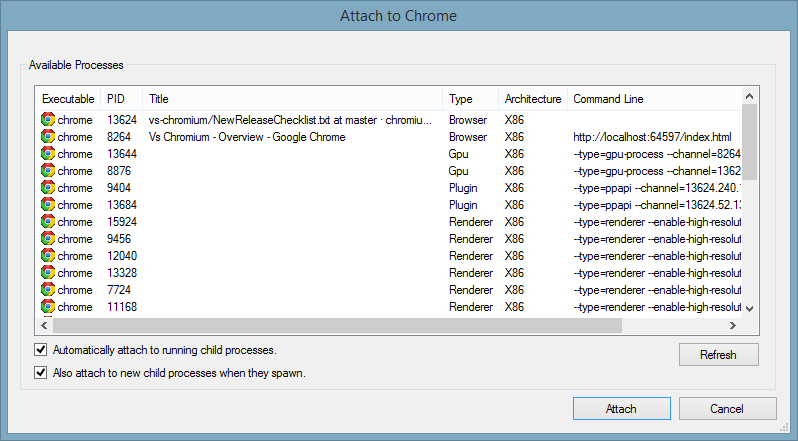

VsChromium is a Visual Studio Extension containing a collection of tools
useful for editing, navigating and debugging code.
Amongst other things, VsChromium offers full text search engine, a fast
and scalable alternative to the built-in "Find in Files" Visual Studio
feature that can provide search results in less than 0.1 seconds
for 100,000+ files.
Requirements
- VsChromium is compatible with Visual Studio Pro 2013 and up, including
the free Visual Studio Community 2013.
- A Windows 64-bit operating system is required. Certain features are
disabled for versions of Windows less than Windows 7.
-
Express editions of Visual Studio are not supported due to
limitations of VS extensibility framework for Express.
Installation
- Download the latest release of
VsChromium.vsix
- Open the file (double click) to open the VSIX Installer dialog.
- Click "Install"
- Start Visual Studio 2013
- Go to "Tools | Extensions Manager..."
- Check the "VsChromium" extension is present and enabled.

Getting started
Although the VsChromium search engine was initially implemented to work
exclusively with Chromium enlistments, it has been extended to support
any directory or Visual Studio project on disk.
Getting started with existing projects
The VsChromium Code Search features can be
enabled for any existing project or directory on disk by creating a custom
configuration file
vs-chromium-project.text.
- Install VsChromium and start Visual Studio
- Create a new text file and create the 3 sections
[SourceExplorer.ignore],
[SearchableFiles.ignore] and
[SearchableFiles.include].
These sections define which files and directories are loaded by the
search engine, and will show up in Source Explorer and
Code Search. The sections contents follows
the same format as a .gitignore file
- Save the text file in the directory of the project to index and
name it vs-chromium-project.txt
- Note: If you want Code Search and Source Explorer to be enabled automatically
with a Visual Studio Solution, save the file next to the ".sln" file, or in any
parent directory.
- The search engine should start loading files right away, and
both Solution Explorer and
Code Search will be available shortly
afterward.

Getting started with Chromium enlistments
- Install VsChromium and start Visual Studio
- Open a source file from a Chromium enlistment on disk
- The search engine should start loading files right away, and
both Solution Explorer and
Code Search will be available shortly
afterward.

Code Search and Source Explorer
VsChromium has a built-in full text search engine that serves as the basis
for both the Source Explorer and Code Search features:
Source explorer
Source Explorer integrates in
Visual Studio's build-in Solution Explorer and shows the hierarchy of
directories and files loaded in the search engine. The contents
updates automatically as files are changed on disk.
Source Explorer supports many built-in Visual Studio features, such
as searching the project for matching files and directories, and
contextual menus.

Code Search
Code Search is a
Visual Studio Tool Window offering functionality similar to 'Find in Files',
but with faster results. Code Search allows looking for any text using
simple text patterns or regular expressions. Code Search is available
through the View | Other Windows
top level menu.
Code Search is always one keystroke away, as hitting
Ctrl-Shift-; immediately starts
a full text search with either the current editor selection, or the
word at the current caret location.
The scope of the search - "File Paths" - can be refined at any time using
a flexible syntax for defining file name patterns.
Search options include Match Case,
Match Whole Word and
Use Regular Expressions.
Search Code syntax
The Search Code search box supports
two syntax format, depending on the state of the
regex option in the toolbar.
- For simple text search, the search pattern will be matched "as-is"
when doing full text search, including white spaces, with the exception of
- * matches a sequence of zero or
more characters on the same line
- \ serves as an escape character
for \ and
*.
- For regular expression searches, the search pattern follows the
regular expressions permitted by the
Google RE2 engine.
File Paths syntax
The File Paths search box has two
purposes:
- When the Code Search box is empty, it is used to show the list of
files matching the specified patten.
- When the Code Search box is not empty, it is used to filter the list of
files considered for the full text search.
Syntax
The syntax for "File Paths" follow a subset of commonly used glob
patterns (e.g. node-glob or .gitignore).
- ; is the separator for multiple
entries (e.g. *.txt;*.log).
- Path separators can be expressed as either
/ or
\
- Matching is performed against the file name portion of a path
(e.g.foo.txt for the path
src/blah/boo/foo.txt),
unless a path separator is present.
- * matches 0 or more characters
in a single path portion.
- / at the beginning of the path
indicates a path relative to the top level directory of the project.
- / at the end of the path
indicates that portion of the path must be a directory name.
- **/ or
/**/ matches zero or more
directories of a path
- If the path does not contain any /
or *, a
* is automatically added at the start
and at the end of the pattern, to match sub-strings inside the file name
portion of the path (e.g. foo
matches afoo1.txt,
foo.txt, etc).
Examples
| Pattern |
Matches |
| foo |
Any file named "foobar.cc", "afoobar.txt", etc. in any
directory of the project. |
| f*oo*.txt |
Any file named "foo.txt", "f123oo.txt", "f123oo4bar.txt" etc.
in any directory of the project. |
| foo/bar.txt |
Any file named "bar.txt" inside a "foo" directory in any
directory of the project. |
| foo/ |
All files under a "foo" directory (recursively) in any directory
of the project. |
| /foo |
All files under the "foo" directory in the top level directory
of the project. |
| /foo;/bar |
All files under the "foo" or "bar" directory in the top level
directory of the project. |
| foo/**/bar.txt |
Any file named "bar.txt" inside a directory or sub-directory of
"foo" anywhere in project directory. |
Editor features
Chromium Coding Style checker
When a source file belonging to a Chromium enlistment is opened in the
Visual studio editor, a few custom "classifiers" (or "colorizers") kick off
and inspect the code for Coding Style
violations. Each violation is indicated with a red background highlighing the text
violating a rule.
List of supported style violations
- Lines longer than 80 columns (all text files)
- Trailing spaces (all text files)
- TAB instead of space characters (all text files)
- Invalid use of "else if" on new line (C++ file)
- Invalid indentation of "public:", etc. modifiers (C++ files)
- Space after "for" keyword (c++ files)
- Usage of CRLF instead of LF as end of line characters (all text files)
Note: The set of rules currently supported is minimal but is helpful for a
developer new to the Chromium Coding Style rules.
Example
The image below shows a source file violating a few rules: extra spaces
at the end of a line, usage of the TAB character, incorrect indendation
of the "public:" accessor keyword.

Navigate to Build Error
When using the Package Manager Console
tool window as an integrated command prompt, for example to build
Chromium using "ninja", build errors from various tools are shown as
hyperlinks that can be clicked to open the corresponding file
in the editor, as illustrated in the picture below.

Debugger features
Attach to Chrome
The Attach to Chrome dialog is a replacement for the Attach to Process dialog,
showing all the chrome processes running on the local machine, grouped by
process type.


The Attach to Chrome dialog also allows users to attach to all current *and*
future child processes that spawn, making simple otherwise difficult debugging
scenarios involving child-process startup.
Current limitations of Auto attach to Child Processes:
-
Only works for processes attached through the Attach to Chrome dialog.
In other words, launching via F5 is not supported for this feature.
-
Does not support automatically attaching to future child processes of x64 parents.
Both of these limitations will be removed in a subsequent release.
Known Issue:
Due to a bug
in the Visual Studio IDE, it is not advisable to leave the processes debug window opened
by default when using auto attach to children.
Advanced Debug Visualizers
Custom visualizers for visualizing complex Chromium specific data-types.
Visualizers are included for the following types:
- base::Time (displays base::Time formatted as MM/DD/YYYY HH:MM:SS.XXXX)
- base::TimeDelta (displays base::TimeDelta formatted as HH:MM:SS.XXXX)
Other, simpler visualizers are available in src\tools\win\DebugVisualizers.
What's new
v0.9.14
See v0.9.14 release nodes
v0.9.9
Source Exporer features
- Support for F8/Shift-F8 (goto next/previous result) when file contents search result is active.
- Support for traversing symlinks (i.e. reparse points) when enumerating files and directories.
- Additional button in Source Explorer toolbar to control whether searches include (or not) files and
directories contained in symlink directories. This feature, along with the previous one, is particularly
useful when working with Dart projects and packages, as package folders are symlinks to a local user folder.
- Fix support for certain wildcard pattern matching. E.g. foo/*/bar was not correctly supported.
- Improve caching validation algorithm, so that restarting Visual Studio is not necessary anymore when updating configuration file project.vs-chromium-project.
- Various UI and performance improvements.
v0.9.8
Source Exporer features
- Support for wildcard character ("*") in text searches.
- Support for context menus in tree view.
- Various UI and performance improvements.
Debugger features
- Attach to Chrome and Child process debugging works with x64
- Child process debugging works in launch (i.e. F5) scenarios. Note this feature needs to be enabled by a toolbar button in Chromium Source Explorer
v0.9.7
Debugger features
- Automatically attach to child processes
- Custom visualizers for base::Time and base::TimeDelta
Current limitations of Auto attach to Child Processes:
-
Only works for processes attached through the Attach to Chrome dialog.
In other words, launching via F5 is not supported for this feature.
-
Does not support automatically attaching to future child processes of x64 parents.
Both of these limitations will be removed in a subsequent release.
Known Issue:
Due to a bug
in the Visual Studio IDE, it is not advisable to leave the processes debug window opened
by default when using auto attach to children.
v0.9.1
Debugger features
- Attach to all running Chrome processes
- Attach to child Chrome processes
Editor features
Configuration files
One of the goals of VsChromium is to work "out of the box". To enable this,
a certain number of assumptions had to be made. Most of these assumptions
are customizable through text based configuration files.
By default, configuration files are installed and stored in the "Configuration"
sub directory of the VsChromium installtion directory, typically the Visual Studio
extension directory. Overriding a configuration file is as easy as creating a
".VsChromium" directory in the Windows' user folder ("c:\users\username"),
make a copy of the relevant configuration file below, and edit it.
After changing one or more configuration files, it is required to restart
Visual Studio for the changes to take effect.
Configuration files related to Chromium Explorer and indexing
| ChromiumEnlistmentDetection.patterns |
This file is used to determine whether file belongs to a Chromium enlistment.
It is simply a list of directory and files names to look for when looking at
the parent directories of a file. There should be no need to customize this
file unless the Chromium enlistement significanly changes.
|
| ChromiumExplorer.ignore |
This file uses a ".gitignore" syntax to filter the list fo directories
and files to display in the Chromium Explorer tool window. The file could be
in theory empty, but it is sometimes useful to ignore files/directories that
don't contains files meaningful to day to day development (e.g. *.pdb, *.obj,
etc. files).
Note this file is also implicitly used to filter the results
of "search file names" and "search directory names".
|
| SearchableFiles.ignore |
This file uses a ".gitignore" syntax to exclude files from the
"text search" feature. This is required to avoid loading GBs of irrelevant
files in memory (e.g. build output files such as .obj, .exe, etc. fiels).
This allows decreasing the amount of files loaded in memory from 30+GB
typically found in a local Chromium enlistement directory to a more reasonable
~1.2GB of relevant source files.
|
| SearchableFiles.include |
This file uses a (reverse) ".gitignore" syntax to include files into
the "text seach" feature. This file is used as a 2nd pass after
"SearchableFile.ignore" to filter out even more using inclusion rules.
|
Configuration files related to Coding Style checkers
| ChromiumEnlistmentDetection.patterns |
Same as above.
|
| ChromiumStyleCheckers.disabled |
This file can be used to disable various style checkers. Simply un-comment
the corresponding line.
|
| ChromiumCodingStyle.ignore |
This file uses a ".gitignore" syntax to determine which files should
not be validated by the Chromium Coding Style checker. This is needed
because a Chromium enlistment contains third party libraries and generated
files that don't always follow the Chromium Coding Style conventions.
|
Keyboard shortcuts
| Feature | Shortcut |
| Code Search |
Ctrl-Shift-; |
| File Paths search |
Ctrl-Shift-' |
| Navigate to next search result |
F8 or
Ctrl-F8 |
| Navigate to previous search result |
Shift-F8 or
Ctrl-Shift-F8 |
| Format comment |
Ctrl-K, C |
Technical specifications
From a technical perpective, the "search engine" used by VsChromium has
been designed with the assumption that a good amount (e.g. at least 2GB) of
physical memory is available. This allows the search engine to load all
relevant source files in memory for fast brute-force text search.
The search engine has been carefully optimized to make use of
multi-core processors for many internal operations. So, in general, the more
cores are available, the faster the engine is.
For example, a HP Z620 with 2x8 cores processors and hyperthreading enabled,
the search engine uses 32 worker threads (1 thread per logical processor).
-
During initial file loading from an SSD, the engine loads 90,000+ files in
parrallel and achieves ~80% CPU utilization. All files are usually loaded in
less than 10 sec.
Warning: The indexing process can take significantly longer if the enlistment is
located on an HDD drive as disk seek times are much slower.
Warning: We also saw significant performance degradation on a SSD
when "Real Time" disk activity monitoring of certain Anti Virus programs is
active. This can be easily worked around by configuring the Anti Virus software
to exclude the directory containing the local Chromium enlistment.
-
During a "Code Search" operation, the search engine partitions the set
files to search into 32 equally sized partitions, runs a search query
across as many threads as logical processors are available, then merge
the results before sending back to the VsChromium package. Using
efficient native c++ string search algorithms (
bndm,
Boyer-Moore
and Google's RE2 engine),
the search engine achieves throughputs of 15+GB/s, meaning a text
search usually takes less than 0.1s with 1.2GB of source files.
Server process
To avoid competing with the VM address space of the Visual Studio process
(devenv.exe), the VsChromium search engine runs as a child process of
Visual Studio.
Example of memory usage and process relationship after loading ~1.2GB of
source files:

The server process is always automatically terminated when the Visual Studio
process is terminated. Each instance of Visual Studio uses its own instance
of the VsChromium server process.
IPC: The VsChromium package and the VsChromium server process use protobuf
over a local TCP connection as IPC mechanism.
To avoid running out of VM address space, the search engine runs as a
64-bit process.